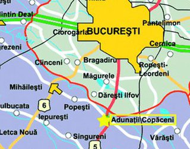

Acasa
Asezare Geografica
Istoric
Demografie
Turism
|

Comuna Adunații Copăceni este situată în zona de nord a județului, la limita cu județul Ilfov, pe malul drept al Argeșului.
Este străbătută de șoseaua națională DN5, care leagă Giurgiu de București. Lângă Adunații-Copăceni,
din acest drum se ramifică șoseaua națională DN5A, care duce spre sud-est către Greaca și mai departe
către Oltenița; și șoseaua județeană DJ412A, care duce spre nord-vest la Mihăilești (unde se intersectează
cu DN6), Buturugeni, Grădinari, Ogrezeni și Bolintin-Vale.[4].
|